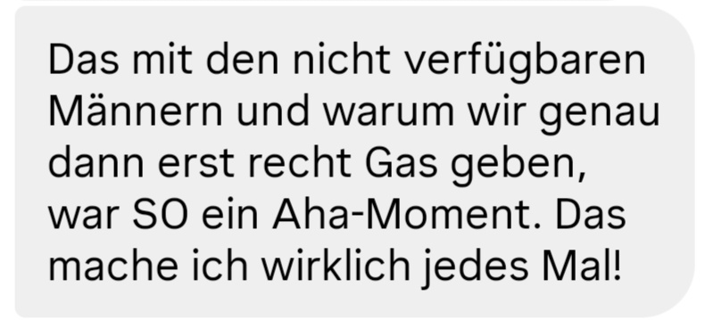
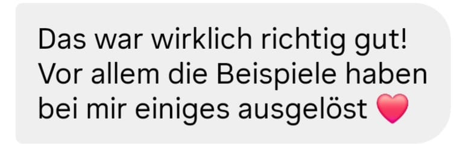
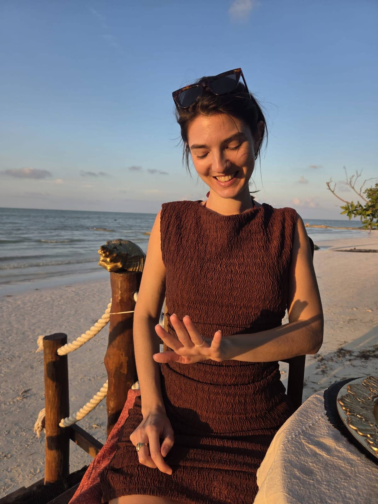
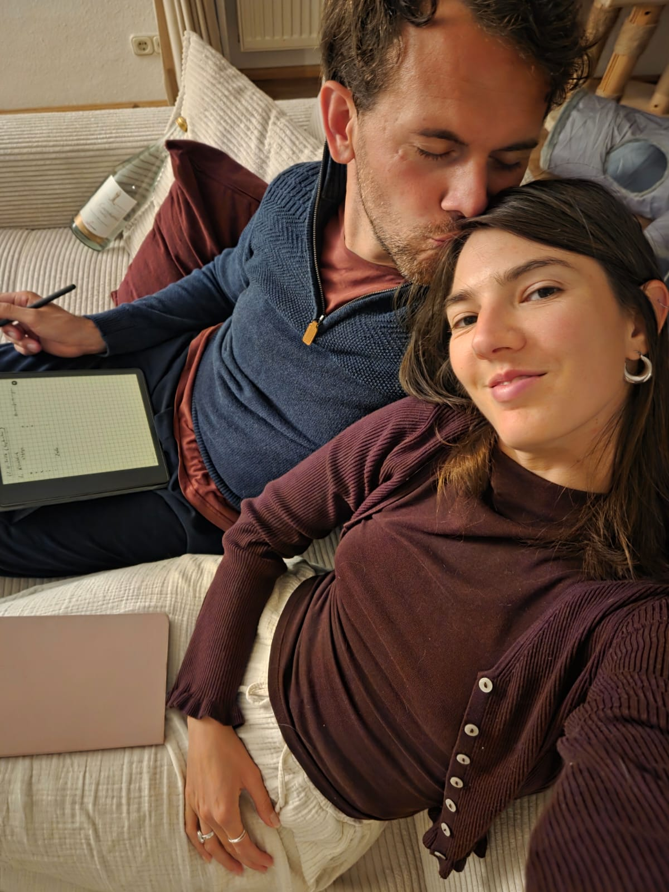

Das haben Teilnehmerinnen mir nach dem Workshop geschrieben.






Wische zur Seite für mehr.

Kostenfreier Live-Workshop mit Annika29. November · 19 bis 20.30 Uhr · per ZoomEr findet dich toll, meldet sich mal mehr und mal weniger und hält sich trotzdem alle Optionen offen, während du dich fragst, was du noch tun musst, damit er dich wirklich wählt.
In diesem Workshop zeige ich dir, was sich ändern muss, damit du nicht länger um einen Platz in seinem Leben kämpfen musst.
Hier Zugangslink anfordernSchreib mir einfach „Workshop“ und ich schicke ihn dir sofort.
Er schreibt dir jeden Tag über Alltagssachen, aber ein richtiges Date schlägt er nie vor, obwohl du ihm längst geschrieben hast, dass du frei hast. Also wartest du weiter und liest eure letzten Nachrichten noch einmal durch, weil du dich fragst, was du falsch gemacht hast. Du sagst sogar dein Training ab, weil er sich vielleicht doch noch meldet. Wenn du daran denkst, dass er es nicht tut, zieht sich alles in deinem Magen zusammen.
Je länger er schweigt, desto mehr überlegst du, wie du ihn doch noch von dir überzeugen kannst, obwohl du längst weißt, dass er dir nicht guttut. Diese Ungewissheit ist schlimmer als jede Abfuhr, weil du so gern wenigstens eine klare Ansage hättest, damit du endlich weißt, woran du bist.
Du siehst zu, wie alle anderen nach und nach ihren Partner finden, während du dich fragst: „Was ist eigentlich falsch an mir, dass mich niemand haben will?“ Für lockere Sachen hat es immer gereicht, für eine tiefe Bindung nie. Am Ende hörst du meistens dasselbe: „Du bist eine tolle Frau, aber…“
Du wünschst dir eine Partnerschaft auf Augenhöhe, in der ihr euch gegenseitig unterstützt und euch wohl und sicher fühlt. Einen Mann, mit dem du lachen kannst und bei dem es dir völlig egal ist, wie du auf ihn wirkst, weil du einfach du bist. Du willst dir die Liebe nicht mehr durch Leistung erarbeiten müssen, weil sie einfach sein darf und er sich für dich entscheidet, ohne dass du ihn erst überzeugen musst.
Das nimmst du aus dem Workshop mit:
Schreib mir einfach „Workshop“ und ich schicke ihn dir sofort.


Wische zur Seite für mehr.

Fast 10 Jahre war ich Single. Ich machte Karriere, verdiente gutes Geld, bereiste Kuba, Südafrika und Marokko und liebte Brunch-Dates mit meinen Mädls. Aber sobald ich einen Mann toll fand, war von der selbstbewussten Annika plötzlich nicht mehr viel übrig.
Ich wartete auf Nachrichten, analysierte Antworten und sagte sogar mein heiliges Tanztraining ab, wenn er spontan Zeit hatte. Zog er sich zurück, brach für mich eine Welt zusammen. Tagelang fragte ich mich, was mit mir nicht stimmt. Fürs Bett war ich wohl gut genug, aber für mehr reichte es nie.
Dabei hatte ich unzählige Bücher über Datingpsychologie gelesen, Podcasts gehört und war sogar in Therapie. Warum bekam ich ausgerechnet das nicht hin?
Irgendwann hörte ich auf, ständig zu überlegen, wie ich einen Mann von mir überzeugen kann, und fing an, mich mit mir selbst auseinanderzusetzen. Plötzlich interessierten sich Männer für mich, die ich früher vermutlich aussortiert hätte.
Heute bin ich mit Nik verlobt. Er bemüht sich bis heute um Dates, ich weiß immer, woran ich bin und kann einfach ich selbst sein. Selbst als ich beim dritten oder vierten Date plötzlich weinen musste, nahm er mich ganz selbstverständlich in den Arm. Ich bin nie zu viel oder zu wenig, sondern für ihn perfekt.
Und weißt du was? Ohne meine Veränderung hätte ich Nik wahrscheinlich wegen des „fehlenden Funkens“ aussortiert.
Heute helfe ich Frauen, die beim Dating genau dort feststecken, wo ich jahrelang war. Und darum geht es in diesem Workshop.

Tippe auf den Button und schreib mir im Chat einfach „Workshop“. Ich schicke dir den Zugangslink sofort.
Hier Zugangslink anfordern